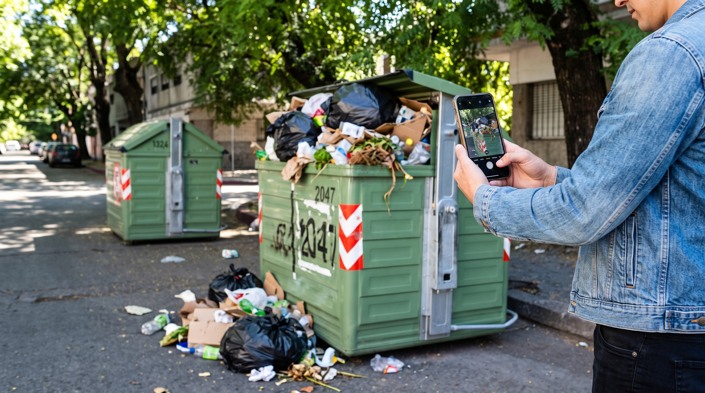

Sistema de Gestión de Residuos Urbanos conecta la gestión de contenedores, camiones, rutas e incidencias para que cada parte del servicio pueda actuar a tiempo.
¿Sos funcionario? El administrador habilita tu cuenta para ingresar al sistema interno.
El público consulta e informa. Los funcionarios gestionan. El administrador controla los accesos y la operación.
Consultá rutas simuladas, camiones, contenedores e incidencias visibles de la zona.
Informá un desborde, rotura o falta de recolección sin crear una cuenta de vecino.
Los funcionarios trabajan con camiones, contenedores, rutas y tareas asignadas desde un panel protegido.
Registro completo de vehículos con matrícula, modelo, estado y tipo de residuo asignado.
Control de ubicación, zona, estado y tipo de residuo de cada contenedor en la ciudad.
Administradores, operarios, conductores y peones con accesos diferenciados según su función.
El sistema conecta a vecinos y funcionarios en un flujo claro de trabajo.
Un vecino detecta un problema: contenedor lleno, rotura, falta de recolección.
Completa el formulario de incidencia con ubicación, tipo y descripción del problema.
El equipo interno recibe la incidencia, la asigna y coordina la solución.
Se actúa sobre el problema y se actualiza el estado en el sistema.
Consultá las rutas, contenedores y puntos de recolección de tu zona.

Contanos qué ocurre y dónde. Tu reporte recibirá un número de incidencia para que el equipo pueda gestionarlo.
Somos una empresa de desarrollo de software enfocada en soluciones tecnológicas para la gestión urbana. SiGeRU nace como respuesta a la necesidad de digitalizar y optimizar la gestión de residuos en las ciudades.
Nuestro equipo combina conocimiento técnico con comprensión del problema real: calles más limpias, operaciones más eficientes y vecinos que pueden participar activamente del cuidado de su barrio.